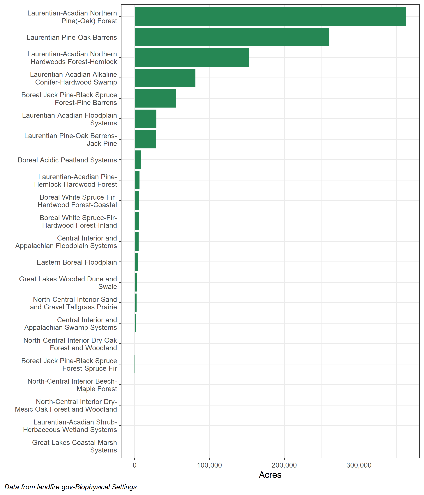
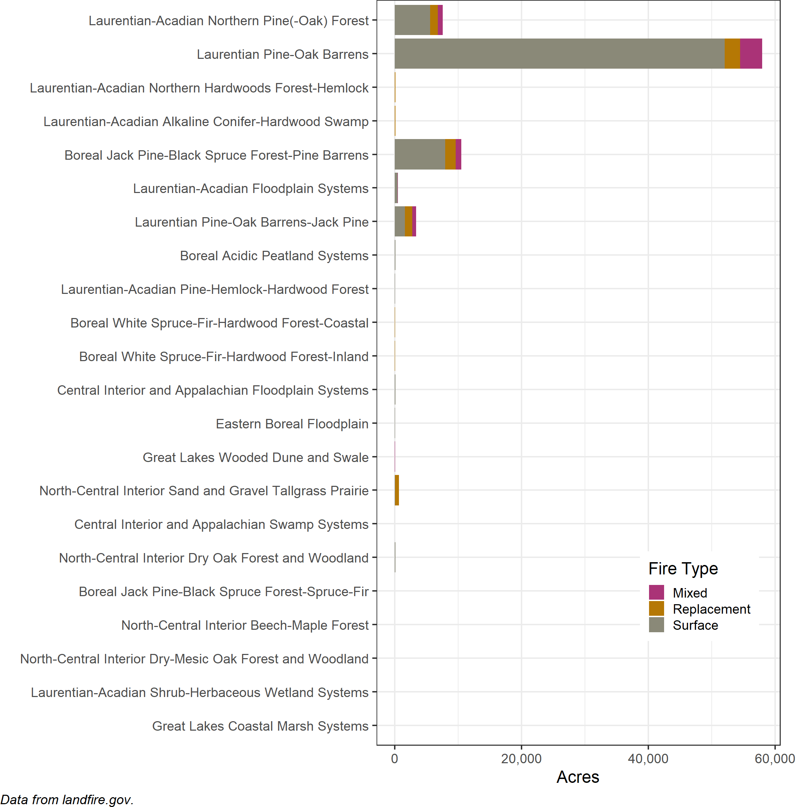

Last updated: 2022-03-31
Checks: 7 0
Knit directory: comparefire/
This reproducible R Markdown analysis was created with workflowr (version 1.7.0). The Checks tab describes the reproducibility checks that were applied when the results were created. The Past versions tab lists the development history.
Great! Since the R Markdown file has been committed to the Git repository, you know the exact version of the code that produced these results.
Great job! The global environment was empty. Objects defined in the global environment can affect the analysis in your R Markdown file in unknown ways. For reproduciblity it’s best to always run the code in an empty environment.
The command set.seed(20220322) was run prior to running the code in the R Markdown file. Setting a seed ensures that any results that rely on randomness, e.g. subsampling or permutations, are reproducible.
Great job! Recording the operating system, R version, and package versions is critical for reproducibility.
Nice! There were no cached chunks for this analysis, so you can be confident that you successfully produced the results during this run.
Great job! Using relative paths to the files within your workflowr project makes it easier to run your code on other machines.
Great! You are using Git for version control. Tracking code development and connecting the code version to the results is critical for reproducibility.
The results in this page were generated with repository version 3e79ce5. See the Past versions tab to see a history of the changes made to the R Markdown and HTML files.
Note that you need to be careful to ensure that all relevant files for the analysis have been committed to Git prior to generating the results (you can use wflow_publish or wflow_git_commit). workflowr only checks the R Markdown file, but you know if there are other scripts or data files that it depends on. Below is the status of the Git repository when the results were generated:
Ignored files:
Ignored: .Rproj.user/
Ignored: analysis/analytics.html
Note that any generated files, e.g. HTML, png, CSS, etc., are not included in this status report because it is ok for generated content to have uncommitted changes.
These are the previous versions of the repository in which changes were made to the R Markdown (analysis/huronManistee.Rmd) and HTML (docs/huronManistee.html) files. If you’ve configured a remote Git repository (see ?wflow_git_remote), click on the hyperlinks in the table below to view the files as they were in that past version.
| File | Version | Author | Date | Message |
|---|---|---|---|---|
| html | 0fb69ac | rswaty | 2022-03-31 | Build site. |
| Rmd | ea2a9f4 | rswaty | 2022-03-31 | added implications etc to Huron page |
| html | 4dc3857 | rswaty | 2022-03-30 | Build site. |
| html | 65a27cb | rswaty | 2022-03-30 | Build site. |
| html | 11d5b18 | rswaty | 2022-03-30 | Build site. |
| html | d0314cb | rswaty | 2022-03-30 | Build site. |
| html | 6aebdbd | rswaty | 2022-03-29 | Build site. |
| html | 29413f2 | rswaty | 2022-03-29 | Build site. |
| html | 48d8672 | rswaty | 2022-03-22 | Build site. |
| Rmd | 4427eaa | rswaty | 2022-03-22 | fixed some typos, added Data and Methods page |
| html | 0178165 | rswaty | 2022-03-22 | Build site. |
| html | 5a9436f | rswaty | 2022-03-22 | Build site. |
| Rmd | 9e3b367 | rswaty | 2022-03-22 | Publish the initial files for comparefire |
The Huron-Manistee National Forest is ~1 million acres and is in the lower peninsula of Michigan. The forest is home to wild and scenic rivers such as the Pine, Manistee and Pere Marquette, and rare species such as Kirtland’s warbler, Karner Blue Butterfly and Pitcher’s thistle.
LANDFIRE data is designed for use over large areas. It’s a good idea to review initial outputs before proceeding. For example here we want to see which Biophysical Settings (BpSs, historical ecosystems mapped by LANDFIRE) were most prevalent before we go to calculate historical fire regimes.
We found:

Approximately 80,000 acres
We found that the there was substantial amounts of fire in some key BpSs:

Approximately 4,000 acres (on average)
Historically fire was not evenly distributed across the landscape, rather it was highly related to the Biophysical Settings, with some being highly fire adapted (e.g., Laurentian Pine-Oak Barrens) and some not (e.g., Laurentian-Acadian Northern Hardwoods Forest-Hemlock).
Currently there is 20x less fire per year than there was historically. Some patterns jump out:
We did not explore ecosystem specific implications here (see future directions below). What we can see is that Vegetation Departure (index that “indicates how different current vegetation on a landscape is from estimated historical conditions”, from https://landfire.gov/vdep.php) is relativity high across the entire area, including within the Huron-Manistee National Forest.
Map of LANDFIRE’s Vegetation Departure dataset for the Huron-Manistee National Forest. Green indicates a structural condition closer to modeled historical conditions.
Our analysis points to substantial differences in fire regimes for the Huron-Manistee National Forest, and maps of Vegetation Departure indicate high levels of differences between historical and current vegetation structure. That said questions remain, many of which can be explored with LANDFIRE data:
sessionInfo()R version 4.1.2 (2021-11-01)
Platform: x86_64-w64-mingw32/x64 (64-bit)
Running under: Windows 10 x64 (build 19043)
Matrix products: default
locale:
[1] LC_COLLATE=English_United States.1252
[2] LC_CTYPE=English_United States.1252
[3] LC_MONETARY=English_United States.1252
[4] LC_NUMERIC=C
[5] LC_TIME=English_United States.1252
attached base packages:
[1] stats graphics grDevices utils datasets methods base
other attached packages:
[1] forcats_0.5.1 dplyr_1.0.8 purrr_0.3.4 readr_2.1.2
[5] tidyr_1.2.0 tibble_3.1.6 ggplot2_3.3.5 tidyverse_1.3.1
[9] stringr_1.4.0 scales_1.1.1 workflowr_1.7.0
loaded via a namespace (and not attached):
[1] Rcpp_1.0.8 lubridate_1.8.0 getPass_0.2-2 ps_1.6.0
[5] assertthat_0.2.1 rprojroot_2.0.2 digest_0.6.29 utf8_1.2.2
[9] R6_2.5.1 cellranger_1.1.0 backports_1.4.1 reprex_2.0.1
[13] evaluate_0.15 highr_0.9 httr_1.4.2 pillar_1.7.0
[17] rlang_1.0.1 readxl_1.3.1 rstudioapi_0.13 whisker_0.4
[21] callr_3.7.0 jquerylib_0.1.4 rmarkdown_2.13 labeling_0.4.2
[25] bit_4.0.4 munsell_0.5.0 broom_0.7.12 compiler_4.1.2
[29] httpuv_1.6.5 modelr_0.1.8 xfun_0.29 pkgconfig_2.0.3
[33] htmltools_0.5.2 tidyselect_1.1.2 fansi_1.0.2 crayon_1.5.0
[37] tzdb_0.2.0 dbplyr_2.1.1 withr_2.5.0 later_1.3.0
[41] grid_4.1.2 jsonlite_1.8.0 gtable_0.3.0 lifecycle_1.0.1
[45] DBI_1.1.2 git2r_0.30.1 magrittr_2.0.2 vroom_1.5.7
[49] cli_3.1.1 stringi_1.7.6 farver_2.1.0 fs_1.5.2
[53] promises_1.2.0.1 xml2_1.3.3 bslib_0.3.1 ellipsis_0.3.2
[57] generics_0.1.2 vctrs_0.3.8 tools_4.1.2 bit64_4.0.5
[61] glue_1.6.2 hms_1.1.1 parallel_4.1.2 processx_3.5.2
[65] fastmap_1.1.0 yaml_2.2.2 colorspace_2.0-3 rvest_1.0.2
[69] knitr_1.37 haven_2.4.3 sass_0.4.0